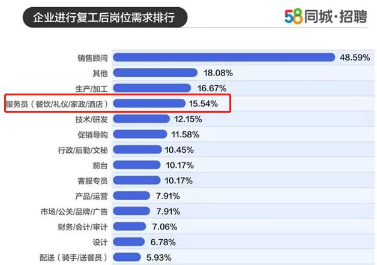

“我没有选择的余地”——疫情下家政女工的返乡与回城
原文链接 备份链接 摘要：她们曾为城市做出过看似微小但却关键性的贡献，值得在退休后得到来自社会的助力与尊重，她们的困境，也值得在春暖花开、疫情驱散后继续被审视与关注。 谁都绝不会想到，庚子鼠年的这个春节会是如此焦虑且悲壮。线上炽热，线下 …

还有些雇主，因为年前预定好的阿姨无法回京，自己的公司又复工，不能没有育儿嫂，干脆开着车去阿姨的老家们，将阿姨们从河北、山东、山西这些地方，接回到北京来，放到自家另一所房子里隔离14天后上工。
文 | 涂雨清
编辑 | 金匝
运营 | 一凡

两个家庭的困境

这原本是一个相对轻松的春节。50岁的育儿嫂陈红和丈夫今年在北京租上了自己的房子，是四居室里的一个单间，终于不用住在公司宿舍了。16岁的儿子放寒假从老家河北赶来，大年三十，她做了小鸡炖蘑菇，烧了一条鱼，还包了饺子，是自己剁的馅儿。几天前，她花了200块钱给自己买了件新衣服，想着3月份回老家的时候能穿上，这是今年她第一次买新衣裳。原本狠下心给自己买了一件900元的羽绒服，回家挂了一个晚上，最后还是拿去退了，给孩子换了一整套。北京的除夕夜很安静，听不到爆竹声。傍晚六点，日落了，整个屋子，只有陈红一家的灯还亮着，其它三家人都回了老家过年。新型冠状肺炎的消息在那个晚上来到他们的餐桌，“哎呀，这病情怎么这么厉害啊，怎么还能封村。”但一家人一说就过了，没把它当回事。坏消息却接踵而至。陈红的雇主是一岁半孩子的妈妈，对方告诉她，初六先不用来上工了，在家里观察14天再说。她丈夫在北京一家公司里当司机，假期延长到了2月10号，上初三的儿子也接到了学校通知，暂不返校。这个原本一家团聚的房间渐渐成了牢笼。十平米的房间里，只放得下一张1.5米宽的双人床和一张沙发。儿子个儿高，父子俩睡床上，陈红矮一些，蜷在沙发上，睡一觉起来周身都疼。吃晚饭的时候，陈红想起那桌年夜饭，说，“早知道就不那么快吃完（鱼和鸡）了。”厨房里只剩下几袋面条，零星的土豆和白菜。儿子坐在床沿，趴在折叠桌上听网课。延期开学后，老师嘱咐学生网上学习，陈红家里三个人的手机都打不开网课的页面，孩子只能听见声音，看不到链接里的画面。老师说得用电脑，但这个家买不起一台电脑。她看了微信钱包的余额，是200块。原本等着一开工开始赚下个月的生活费，现在看起来情况并不明朗。陷入困境的，不仅仅是陈红一家人。没了育儿嫂，北上广很多家庭都慌了手脚。

▲ 育儿嫂是北上广许多“双工家庭”的生活得以正常运转的“标配”。图 / 《找到你》剧照
住在上海普陀区的方伊楠觉得自己就快抑郁了，“妈妈都是超人咯，白天不用睡觉，晚上也不用睡觉咯。”她的孩子刚满两个月，父亲身体不好，母亲要照顾他，婆婆还没退休，没办法来家里帮手。原本一直有月嫂住家，月嫂走后，和家政公司说好育儿嫂初七来家里上班，肺炎一来，村里封路，育儿嫂没法来了。方伊楠的丈夫是基层社工，因为疫情影响，春节取消了假期，每天最少要在岗位上待12个小时，她开始了独自带娃的噩梦般的日子。崽崽每天晚上12点-1点之间睡觉，3小时左右喂一次奶，早上7点钟醒来，再也不肯睡床，要妈妈抱着睡。不接受亲喂，只能用奶瓶，方伊楠每隔4小时就要吸一次奶。孩子胀气，白天睡不踏实，一般睡了不到10分钟就会惊醒，醒了就需要重新哄睡，她就在这些没有止境的程序里来回往复。没时间做饭，方伊楠自己吃的，通常是泡面和速冻食品。疫情期间买菜也不方便，就算手机下单，也没法送上门，要去小区门口拿，她不放心带孩子出门，又不好意思每次麻烦居委会来送菜，“奶都回了很多。”带娃的第24天，方伊楠联系的家政公司有了信儿，还有几位春节期间没有回老家的育儿嫂可以调动，但能用的育儿嫂太紧俏了，另一家人给出的价格高了1000块，她还没能等来，育儿嫂就去了别家。放下刚睡着的崽崽，方伊楠拿出手机回复朋友的消息，“我一个人，24小时崩溃地带。”
▲ 对很多职场妈妈而言，在家办公带孩子=加班，出门上班=休假。图 / 《业务部长 吉良奈津子》剧照
停滞的生意
陈红的雇主是双职工家庭，孩子妈妈每天7点出门上班，爸爸常年在外。一岁半的孩子正是难带的时候，因为担忧疫情，暂时不敢让育儿嫂来家里。她对陈红说，等到2月20号吧，自己所在的公司通知20号上班，一旦开工，家里不能没人带孩子。某种角度来说，陈红是幸运的，这个春节她留在了北京，隔离14天后，还能继续回到雇主家里。还有更多的育儿嫂滞留在老家，至今无法返回。新冠肺炎在春节期间爆发，包括育儿嫂在内的大量阿姨春节期间回老家，又因疫情无法返岗，家政行业几乎全面停工。北京是全国家政服务需求量排名第一的城市。据北京家政服务协会测算，北京600多万户家庭中，至少有三分之一需要家政服务，其中老人陪护、病患护理、婴幼儿看护等业态需求量最大。育儿嫂和月嫂们缓解着城市越来越大的育幼压力，国家卫健委副主任于学军在2019年提出，目前我国有3岁以下（不含3岁）婴幼儿5000万左右，而照护服务供给不足。从家政服务业态数据来看，母婴护理业态的营业收入占到家政服务业营业总收入的30%。
但这个春节，一夜之间，育幼压力重回北上广。一些规模较大的家政公司决定充分调配春节留京的阿姨。主营业务为育儿嫂和月嫂的家政公司“阿姨来了”北京分公司负责人孙梅说，这些措施也只能满足一些老客户暂时替换的需求，新单几乎接不了。还有些雇主，因为年前预定好的阿姨无法回京，自己的公司又复工了，不能没有育儿嫂，干脆开着车去阿姨的老家们，将阿姨们从河北、山东、山西这些离北京不算太远的省份，接回到北京来，放到自家另一所房子里隔离14天后上工。春节后原本是这个行业一年当中最旺的用工季节，以往从大年初四开始往后的一个月里，家政公司“阿姨来了”在北京每天能签下的新单几十到上百，但现在从各个渠道反馈来的数据，只有“零星的几个单子”。2月7号开始，“阿姨来了”呼吁非疫区的阿姨回京，由公司安排隔离14天再上岗。但阿姨们分散在全国各地，目前回到北京的仅有25人。孙梅说，“我们公司的一句口号就是有人就有一切，现在没有人，就什么都做不了，所有的业务都开展不了。”即便是有了人，也解决不了全部的问题。有家政公司安排好育儿嫂后，雇主要求这家公司的一位店长出具一份保证书，保证这位要来上工的月嫂没有感染肺炎，“我怎么敢保证？”这位店长也很无奈。为了规避风险，更多小型的家政公司则做出了不接单的决定。

▲育儿嫂必须通过严格的培训才可以入户上岗。图 / 受访方提供
在北京的家政行业从业8年，徐莲从育儿嫂干起，成为家政人员培训师，终于在去年5月开了属于自己的一家店，主要接月嫂和育儿嫂的订单，不忙的时候，店里能张罗接单的阿姨有20人左右。但从疫情爆发后到今天，徐莲的店“几乎没有新的客户来问”，“就是有问的，我们也不派单子。”她说，“阿姨要出来，正常来说有隔离申请，咱们也没有隔离的条件，要是居家隔离，咱们对工人也不了解。”北京市疾控中心要求外地返京的家政服务人员，返京后应自我医学观察14天。家政公司的宿舍大多是几人一间的上下铺，很难做到单独隔离。徐莲还是会担心，回北京后也无法保证阿姨们每天接触的人里一定没有感染源。 “还没盈利，就出现了这个事情。损失都不敢想。”徐莲每天都关注新增病例的数量，看看“有没有拐点”，然后叮嘱店里的阿姨“别回来”。
等
大年初七，北京是个晴天，但陈红感受不到比前几日更猛烈的阳光。房间里只有一扇小窗，对面是饭店的水泥外墙，屋子里整日闷沉沉的。一家三口照例又睡到了11点，“早饭那顿就省了”。有工作的时候，她睡不了多久，要早晨6点起床，骑40分钟的电动车到达雇主的家，晚上6点才结束一天的工作。干活的日子睡得踏实，现在，每天都睡不上一个整觉，沙发上伸不开腿，心里又因为没法赚钱着急，实在困得不行了，才能眯一会儿，没多久就醒了。听新闻里说要少出门，多通风。陈红打开那扇灰色的窗，但没有风。她把门也打开了，只留下一道帘子。午饭是面条，给儿子打两个鸡蛋，她和丈夫吃一个，配点咸菜，吃过饭又躺回沙发。房间里只有容纳一人走动的空间，他们通常都各自躺在床上或者沙发上。下午，孩子实在无聊，想跟爸妈一起打扑克，陈红不愿意，“玩什么玩，闹心劲。”她正在盯着手机，再一次查看和疫情有关的消息，“新型肺炎疫情实时播报”，就在她手机通知页面的第一栏。陈红第一次这么关注新闻，每天都要看好几遍手机上的疫情动态，亲友群里转发的文章几乎都会点进去看，“提心吊胆的”。疫情的消息几乎成为这间房子里三个人仅剩的话题。又过了一个星期，陈红终于盼来丈夫原定上班的日子，上班就意味着能按时发工资。但他们只等来了人事发来的一条消息，陈红所在的小区出现了一例确诊病例，单位通知陈红的丈夫，继续在家隔离14天。看着微信账户里的那点儿钱，陈红有些发愁。年前置办完新衣服，原本就只剩下不到1000块，这是他们一家三口最后的生活费。倘若再不开工，她只能向姐姐借钱熬过继续隔离的14天。同为育儿嫂，陈红和同行们大多面临着相似的处境，因为家庭收入低，决定去一线城市打工，每个月挣来的钱都花在刀刃上，没有多余的积蓄。47岁的育儿嫂周爱玲在这个假期回了老家山东，手机里收到了老板通知暂缓返岗的消息。开工的日子一推再推，原本2月10号前可以返岗，在北京隔离14天就上班，但老家的村子至今还封着，她才开始着急自己的收入。平时丈夫在家种地，照看孩子，一家人的各项开支都靠她在北京的这份工资。小型家政公司的老板眼看着就要借钱度日，接到每日人物的电话前，徐莲正在和银行的职员聊信用卡贷款的业务，她算了算手里的钱，大概只能撑到3月份，之后房租钱都付不起了。往常店内每个月的毛利大约两万块，大多是依靠新的订单，老客户换人对中介来说没有利润。一直不能接新单就没有收入，每个月还需要支付一万左右的房租钱。没了阿姨，公司暂时不能履约，以前收的中介费可能需要退回。形势并不乐观。2月8日，58到家母公司到家集团的CEO陈小华在接受《财新》采访时说，如果在一两周后，新冠疫情的新增数量大规模下降，那么对未来就有乐观的预期。而若疫情持续影响两三个月，家政行业规模或仅存原来的10%到20%。

▲58同城招聘数据预测，等疫情稳定人们复工后，对家政等服务业人员的需求排在第三位，但前提是家政行业能够保证被需求的服务人员“健康”。图 / 58同城招聘整理
今年春节后的用工高潮已经指望不上了，徐莲只希望国家在疫情后能出台一些政策，减免家政行业的一部分租金，让公司能扛得久一点。她只能在电话里安抚着急请人的顾客和同样着急工作的阿姨，她相信等疫情过了总会好的，“雇主在等，阿姨在等，我们也在等。”
愿望
5年前，为了供儿子念书，陈红独自来到北京做月嫂，挣的钱比做育儿嫂多一些，一个月能拿到7000元左右。月嫂一般一次接26天，下户后如果没有别的预约，就只能等着，极少能刚下户，就马上能去另一家。双方还得面试，价格、技能、眼缘，都得挑。一年下来，陈红最多只能完整地做6、7个月的月嫂，“连着做谁也受不了。”有一次，陈红不停歇地干了两个月，回家照镜子，“瘦一圈，都不认识了。”白天给月子里的妈妈做饭，三顿正餐和三顿副餐，还有孩子的吃喝拉撒睡，又要打扫卫生，洗衣服。晚上睡不好，宝宝要醒很多次，她得看着。住家也有许多麻烦事，做饭的时候饭和菜的量得小心掌握，做多了，家里的老人觉得浪费，但做少了，不够吃也为难。陈红是个性格直爽的辽宁人，到雇主家的第一件事，就是把自己要注意的事项问得明明白白，比如什么刀切菜，什么刀切水果，她都记着。碰上过最难缠的雇主，之前别的阿姨待几天就下户了，陈红忍了4个半月。遇到合得来的雇主，她掏心窝子对待，别人多给了一个月5000元的工资，她要拿出来4000给孩子买东西，改日送上门去。干了一年月嫂后，陈红觉得自己年纪大了，白天黑夜地干活，“人都垮了”，于是改上白天的班，只做育儿嫂，“晚上能睡觉就行”，但工资也降，一个月不到5000块，只能维持家里的基本开支。两年前，陈红的丈夫做生意，不慎赔了钱，欠下10万块的外债，于是丈夫也来了北京打工。每个月盘算着要是没有大的支出，陈红的工资一到手就拿去还债，“不敢搁手里搁着，搁手里就花了就没有了。”一家人靠丈夫的5000块工资生活，每个月要交2000块房租，还要供孩子的学费和吃穿。夫妻两人一个月有8天的休息日，但他们几乎不休息，而是去当小时工，“一天一百块钱，回来够吃好几天。”陈红不知道自己还能在北京做多久的育儿嫂。市场对育儿嫂年龄的要求越来越严苛，陈红就见过一些雇主，只要四十岁以下的阿姨，如果不能做育儿嫂，其它家政服务的薪水就更低了，但她还是想继续在北京工作。老家的地租了出去，屋子里落满灰尘，门窗都旧了。她说，“回家干啥，守着大空房子，要啥啥没有。”陈红太想出去工作了，闷在出租屋里半个月，瘦了两斤多。她希望可以早点把债还完，再为儿子挣下一栋楼房。武汉医生李文亮去世的那天，她在被窝里为他偷偷抹了眼泪，医护人员原本是自己羡慕的行业，却面临更艰难的处境。她说，“俺们一点也不想给国家添乱。”一家人极少出门，买菜的时候要先看看超市人多不多，等人少的时候再进去。上楼和下楼的时候走楼梯，不坐电梯，尽量不接触公共空间，回到家，全身的衣服都得换一遍。这些天，她家附近超市的菜价贵了，以前一棵白菜2、3块钱，现在10来块钱，买了两棵白菜花了26块钱，豆角、茄子6、7块钱一斤，买上几个就10来块钱，吃不了几顿，她还是放弃了，买了土豆、萝卜这些能存住的菜，计算好一家三口大约一个星期的菜量，花了一百多。账上的钱只剩下不到100块了。陈红和雇主商量，等到下一个阶段过去，也许就能上班。但北京市疾控中心要求家政人员佩戴口罩上岗，陈红数了数，一家三口能用的口罩只剩下7个。元宵节前，一场大雪降临北京，雪后起了风，陈红从沙发上站起来，把窗户开了一点儿缝。那天的风大，终于沿着缝儿，吹进了陈红的小屋。
▲ 图 / 视觉中国
（除孙梅外，文中受访者皆为化名）

每人互动
这个假期，你找家政了么？

文章为每日人物原创
侵权必究


每人作者
长按二维码向我转账
受苹果公司新规定影响，微信 iOS 版的赞赏功能被关闭，可通过二维码转账支持公众号。
原文链接 备份链接 摘要：她们曾为城市做出过看似微小但却关键性的贡献，值得在退休后得到来自社会的助力与尊重，她们的困境，也值得在春暖花开、疫情驱散后继续被审视与关注。 谁都绝不会想到，庚子鼠年的这个春节会是如此焦虑且悲壮。线上炽热，线下 …
原文链接 备份链接 【财新网】（记者 赵宁）北京疫情增速放缓，但防控力度仍未放松。2月16日北京仅新增1例新冠肺炎确诊病例，这是北京连续4天新增确诊病例保持个位数。北京累计疑似病例也从2月11日开始连续6日下降。尽管整个疫情呈现放缓迹 …
原文链接 备份链接 作者：孙梅欣 “ 线上医疗、云办公、远程教育等行业潜藏扩张机遇。 ” 随着2月中上旬企业陆续复工，疫情对商业地产的影响正在逐步展现。 戴德梁行近期的报告显示，针对近期疫情对中国经济的影响，牛津经济研究院(Oxford …
原文链接 备份链接 记者：傅林林 “ 现在拿地都是赌博。 ” 尽管房企的项目还未开工，但在各地的土地市场上，房企的竞争早已开始。 2月14日，北京进行了鼠年的第二场土拍，位于海淀和昌平的3幅地块均竞拍火热，最终成交金额达到196.8亿元。 …
原文链接 备份链接 经济观察网 记者 老盈盈 廖阿姨是广州的一位志愿者，她从大年初二开始在越秀区的某个公交站点驻守，2月8日起则转到了小区。她和她读中学的女儿每天早上七点从两公里外的家里到越秀某小区值班量体温，每天站岗六个小时，元宵节最忙 …